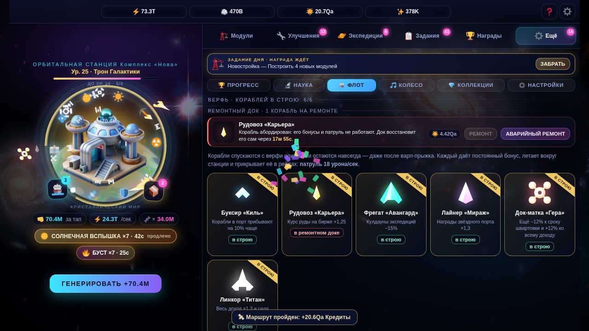

Звёздная станция: Космический Idle
Idle-стратегия: строй и качай космическую станцию, отправляй корабли за ресурсами, исследуй технологии и уходи в престиж. Доход даже когда тебя нет в игре.
Играть прямо сейчас

Об игре
Развивай модули станции, нанимай экипаж, отправляй экспедиции и торговые рейсы. Десятки исследований, артефакты и корабли с бонусами, престиж с постоянными множителями и офлайн-доход за время отсутствия.
Что внутри
- Управление одним пальцем — тяни и отпускай
- Комбо-цепочки и бонусы за точные слияния
- Квесты, задание дня и дзен-режим
- Уровни, монеты и достижения
- Рекорды сохраняются на устройстве
Где играть
- На этом сайте: Звёздная станция: Космический Idle в браузере
- ВКонтакте / VK Игры — запуск из интерфейса VK
- Яндекс Игры — без установки, с прогрессом аккаунта
- RuStore и Google Play — мобильные версии (Android)
Частые вопросы
Нужно ли скачивать? Нет: игра открывается в браузере на телефоне и компьютере.
Нужен ли аккаунт? Нет. Прогресс сохраняется на устройстве, а на площадках (VK, Яндекс) — в аккаунте.
Игра платная? Бесплатная. Внутри есть реклама и покупки — они ускоряют прогресс, но не обязательны.